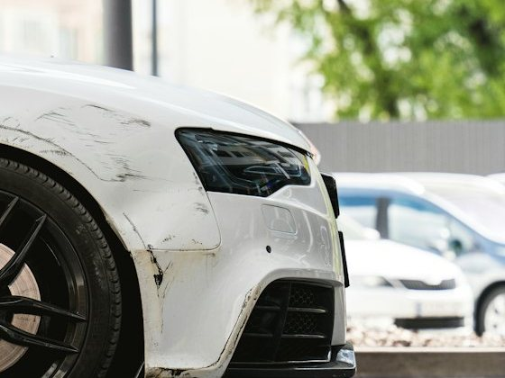

Wer zahlt das Unfallgutachten?
Wer zahlt, was bei Teilschuld und Kasko gilt und wie Sachverständige abrechnen.
02161 688 86 91Mo bis Fr 8 bis 18 Uhr, Sa 9 bis 14 Uhr
In der Regel zahlen Sie nichts, wenn
- der Unfallgegner allein schuld ist,
- der Schaden kein Bagatellschaden ist und
- es ein Haftpflichtschaden ist, kein Kaskoschaden.
Dann gehören die erforderlichen Kosten des Gutachtens zum Schadensersatz, den die Haftpflichtversicherung des Unfallverursachers trägt (§ 249 BGB). Wo die Grenze zum Bagatellschaden liegt, steht unter Kleiner Schaden.
Wie abgerechnet wird, erfahren Sie vor der Besichtigung. Rechnet ein Sachverständiger direkt mit der gegnerischen Versicherung ab, treten Sie ihm dafür Ihren Anspruch auf die Gutachterkosten ab. Fragen Sie vorher, was bei Teilschuld oder Streit um die Schuld auf Sie zukommen kann.
Wann Sie selbst etwas zahlen
- Teilschuld
- Die gegnerische Versicherung zahlt nur den Anteil, den der Unfallgegner verschuldet hat, zum Beispiel 50 oder 70 Prozent. Den Rest tragen Sie. Mit Vollkasko hilft das Quotenvorrecht (die Zahlung des Gegners deckt zuerst Selbstbeteiligung, Gutachten und Wertminderung); ob sich das trotz höherem Beitrag lohnt, rechnet ein Anwalt für Verkehrsrecht für Sie aus.
- Kleiner Schaden
- Unter etwa 750 Euro Schaden werden Gutachterkosten meist nicht erstattet; dann reicht oft ein Kostenvoranschlag. Bis 1.000 Euro kommt es auf den Fall an. Entscheidend ist, wie groß der Schaden aussah, als Sie den Gutachter beauftragt haben, nicht die spätere Endsumme. Verdeckte Schäden hinter der Stoßstange sieht man von außen nicht.

Symbolbild: Streifschaden an Kotflügel und Stoßfänger - Kaskoschaden
- Hagel, Wild, Vandalismus oder selbst verschuldet: Ein Gutachten, das Sie selbst beauftragen, zahlt Ihre Kasko nur mit ihrer vorherigen Zustimmung. Fragen Sie dort zuerst. Zahlt die Kasko nicht, erfahren Sie das Honorar vor der Besichtigung.
- Unfallflucht oder Gegner ohne Versicherung
- Wird der Verursacher gefunden, zahlt seine Versicherung. Sonst hilft bei reinem Blechschaden meist nur Ihre Vollkasko, bei unversichertem Gegner auch die Verkehrsopferhilfe (Notfonds der Kfz-Versicherer).
Ob sich ein Gutachten lohnt, klären Sie am Telefon, bevor Kosten entstehen.
Sie wählen den Gutachter selbst
Bei unverschuldetem Unfall dürfen Sie einen qualifizierten Gutachter Ihrer Wahl beauftragen (BGH, VI ZR 225/13). Sie müssen nicht den nehmen, den die gegnerische Versicherung schickt; er arbeitet in deren Auftrag. Das ist Ihr Recht als Geschädigter. Dieses Recht haben Sie bei jedem Sachverständigen, nicht nur bei diesem Büro.
Bei einem Kaskoschaden gilt das nicht: Dort regelt Ihr Vertrag, wer begutachtet und wo repariert wird.
Was Ihnen bei unverschuldetem Unfall außerdem zusteht
Wertminderung
Ein Auto mit repariertem Unfallschaden bringt beim Verkauf weniger. Diese Wertminderung zahlt bei unverschuldetem Unfall der Gegner, auch wenn Sie das Auto behalten. Sie fällt nicht bei jedem Schaden an, bei kleinen Schäden oder sehr hoher Laufleistung oft nicht. Ob und wie viel, berechnet das Gutachten; ein Kostenvoranschlag enthält sie nicht. Ihre Kasko zahlt keine Wertminderung.
Mietwagen oder Nutzungsausfall
Für die Tage ohne Auto steht Ihnen entweder ein Mietwagen oder Nutzungsausfall zu, nicht beides. Nutzungsausfall ist ein fester Tagessatz je Fahrzeugklasse nach einer Tabelle, die Gerichte verwenden. Voraussetzung: Sie hätten das Auto in dieser Zeit gefahren. Wie viele Tage angemessen sind, steht im Gutachten: Reparaturdauer oder Zeit für die Ersatzbeschaffung. Beim Mietwagen gilt: nicht länger und keine höhere Klasse als nötig, sonst kürzt die Versicherung.
Totalschaden
Kostet die Reparatur mehr, als Ihr Auto vor dem Unfall wert war, zahlt der Gegner den Wiederbeschaffungswert abzüglich Restwert. Den Restwert ermittelt das Gutachten mit drei Angeboten aus dem regionalen Markt; zu diesem Preis dürfen Sie Ihr Auto verkaufen. Verkaufen Sie nicht, bevor das Gutachten vorliegt. Liegt die Reparatur höchstens 30 Prozent über dem Wiederbeschaffungswert, dürfen Sie trotzdem reparieren lassen, wenn fachgerecht repariert wird und Sie das Auto weiterfahren.
Leasing, Finanzierung, Firmenwagen
Leasing: Melden Sie den Unfall auch dem Leasinggeber; er bekommt das Gutachten, meist muss repariert werden. Firmenwagen mit Vorsteuerabzug: Der Schaden wird netto abgerechnet; statt Nutzungsausfall zählen Ihre tatsächlichen Ausfallkosten.
Anwalt
Für die Durchsetzung Ihrer Ansprüche kann ein Fachanwalt für Verkehrsrecht helfen. Seine Kosten trägt der Gegner, wenn er allein schuld ist; bei Teilschuld anteilig.
Welche Positionen in Ihrem Fall erstattet werden, hängt von Haftung, Schadenhöhe und Versicherung ab.
So rechnen Gutachter ab
Nach der BVSK-Honorarbefragung 2024
Das Honorar richtet sich nach der Schadenhöhe, nicht nach Zeitaufwand. Der Berufsverband BVSK e.V. befragt seine Mitglieder; die Tabelle zeigt je Schadenhöhe, was gut die Hälfte der befragten Gutachter berechnet. Gerichte nutzen die Tabelle als Schätzgrundlage. Zur Orientierung, alle Werte netto; das Honorar für Ihr Gutachten erfahren Sie vor der Besichtigung.
Bei unverschuldetem Unfall über der Bagatellgrenze zahlt diese Beträge in der Regel die gegnerische Versicherung.
| Schaden in Euro | Grundhonorar in Euro | |
|---|---|---|
| von | bis | |
| 500 | 265 | 306 |
| 750 | 300 | 340 |
| 1.000 | 354 | 399 |
| 1.500 | 432 | 483 |
| 2.000 | 491 | 545 |
| 2.500 | 541 | 600 |
| 3.000 | 588 | 651 |
| 4.000 | 678 | 748 |
| 5.000 | 756 | 830 |
| 7.500 | 911 | 1.000 |
| 10.000 | 1.063 | 1.166 |
| 15.000 | 1.376 | 1.510 |
| 20.000 | 1.653 | 1.806 |
Quelle: BVSK e.V., Honorarbefragung 2024, Korridor HB V (Grundhonorar netto; Schadenhöhe ist Reparaturkosten netto plus Wertminderung, bei Totalschaden der Wiederbeschaffungswert brutto). Dazu kommen Nebenkosten nach BVSK-Orientierung: Fotos 2,00 Euro je Bild, Schreibkosten 1,80 Euro je Seite, Porto und Telefon pauschal 15,00 Euro, Fahrtkosten ab 0,70 Euro je Kilometer, jeweils netto. Alle Beträge verstehen sich zuzüglich 19 Prozent Umsatzsteuer. Stand der Befragung: 2024, Dokument vom 12.02.2025.
Kontakt und Anfahrt